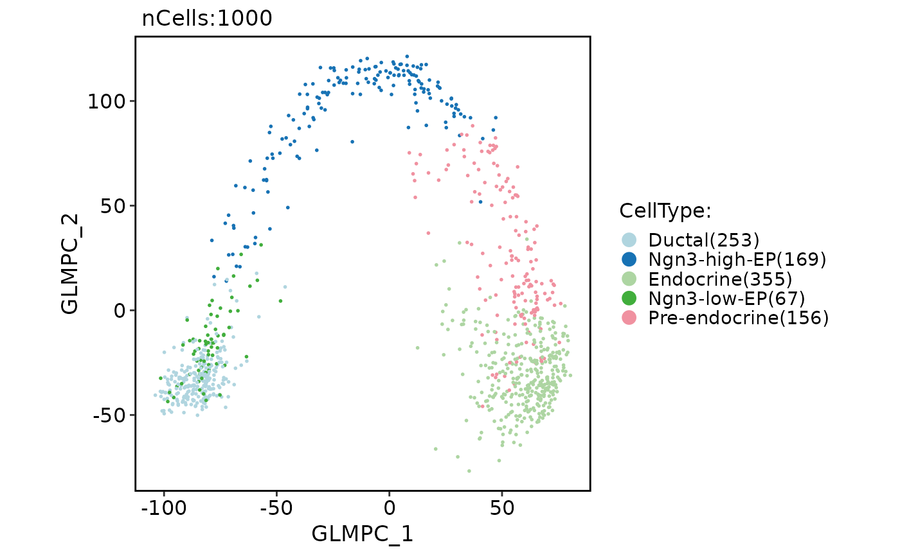

R/Seurat-function.R
RunGLMPCA.RdRun GLMPCA (generalized version of principal components analysis)
RunGLMPCA(object, ...)
# S3 method for Seurat
RunGLMPCA(
object,
assay = NULL,
slot = "counts",
features = NULL,
L = 5,
fam = c("poi", "nb", "nb2", "binom", "mult", "bern"),
rev.gmlpca = FALSE,
ndims.print = 1:5,
nfeatures.print = 30,
reduction.name = "glmpca",
reduction.key = "GLMPC_",
verbose = TRUE,
seed.use = 11,
...
)
# S3 method for Assay
RunGLMPCA(
object,
assay = NULL,
slot = "counts",
features = NULL,
L = 5,
fam = c("poi", "nb", "nb2", "binom", "mult", "bern"),
rev.gmlpca = FALSE,
ndims.print = 1:5,
nfeatures.print = 30,
reduction.key = "GLMPC_",
verbose = TRUE,
seed.use = 11,
...
)
# S3 method for default
RunGLMPCA(
object,
assay = NULL,
slot = "counts",
features = NULL,
L = 5,
fam = c("poi", "nb", "nb2", "binom", "mult", "bern"),
rev.gmlpca = FALSE,
ndims.print = 1:5,
nfeatures.print = 30,
reduction.key = "GLMPC_",
verbose = TRUE,
seed.use = 11,
...
)An object. This can be a Seurat object, an assay object, or a matrix-like object.
Additional arguments to be passed to the glmpca function.
A character string specifying the assay to be used for the analysis. Default is NULL.
A character string specifying the slot name to be used for the analysis. Default is "counts".
A character vector specifying the features to be used for the analysis. Default is NULL, which uses all variable features.
An integer specifying the number of components to be computed. Default is 5.
A character string specifying the family of the generalized linear model to be used. Currently supported values are "poi", "nb", "nb2", "binom", "mult", and "bern". Default is "poi".
A logical value indicating whether to perform reverse GLMPCA (i.e., transpose the input matrix) before running the analysis. Default is FALSE.
An integer vector specifying the dimensions (number of components) to print in the output. Default is 1:5.
An integer specifying the number of features to print in the output. Default is 30.
A character string specifying the name of the reduction to be stored in the Seurat object. Default is "glmpca".
A character string specifying the prefix for the column names of the basis vectors. Default is "GLMPC_".
A logical value indicating whether to print verbose output. Default is TRUE.
An integer specifying the random seed to be used. Default is 11.
pancreas_sub <- RunGLMPCA(object = pancreas_sub)
#> Install package: "glmpca" ...
#> 'getOption("repos")' replaces Bioconductor standard repositories, see 'help("repositories", package = "BiocManager")'
#> for details.
#> Replacement repositories:
#> CRAN: https://cloud.r-project.org
#> Bioconductor version 3.18 (BiocManager 1.30.23), R 4.3.2 (2023-10-31)
#> Installing package(s) 'glmpca'
#>
#> The downloaded binary packages are in
#> /var/folders/rv/3jnfbs0d6r7d0c5bfj7ft5k00000gn/T//RtmpAC8Cie/downloaded_packages
#> GLMPC_ 1
#> Positive: Dusp2, Rgs13, Ctss, Trmo, Rasd2, Ccl2, Tnni3, Isy1, Casp12, Ms4a15
#> Cmah, Cd53, Gm29155, Adamts2, Ctgf, Hpdl, AW112010, Pxdc1, Hist1h2ap, Ublcp1
#> Ddr2, Hist1h2an, AB124611, Upk3b, Cxcr4, Gp2, Gm5786, Obscn, Fcrls, Sparcl1
#> Negative: Bgn, Cyp4f17, Hoxb4, Nrk, Ngfr, Adgrb1, Ngf, Tspan11, Saa3, Ptchd1
#> 9130230L23Rik, Fibcd1, Krtap31-1, Pgm5, 1700128E19Rik, Gm17552, Sh2d5, Scn1b, Hoxc5, Kcnc1
#> Tgm7, Dgkb, Bhlhe22, Nhlh1, Rogdi, Cd248, Avpr1b, Depdc1b, Cbln4, Kdr
#> GLMPC_ 2
#> Positive: Mthfd1l, Ssu2, Dkk2, Lrrc17, Cd300lf, Prdm8, Gp9, Fxyd5, Casp1, Kpna7
#> Ctrl, Clec3b, Pid1, Dusp2, Krtap31-1, Kcng2, Lpl, Col1a2, Lrp1b, Ublcp1
#> Krtap3-2, Srpx, AI849053, AW112010, Rgs13, Pcdh18, Gad2, F13a1, Il16, Nid1
#> Negative: Hhip, Piezo2, Cfap100, Zcchc24, Anxa1, Depdc1b, Fam64a, Rasgrp2, Gm44296, Cenpf
#> Hist1h2ah, Parpbp, Ccnb1, Troap, Kif14, Ube2c, Kif2c, Ascl1, Hmmr, Mpeg1
#> Pif1, Slc4a1, Cdc20, Cenpa, Tpx2, Gm26733, Clic3, Cenpe, Hapln3, Kif18b
#> GLMPC_ 3
#> Positive: Cxcl1, Ccl2, Pdcd1, Tnf, Cxcl2, Gpr153, Usp44, Cd4, Csf2rb, Fxyd5
#> Gp9, Adamts2, Sparcl1, Cxcl10, Krtap31-1, Gad2, F13a1, Rgs13, Prdm8, Siglech
#> Phf21b, Hes5, Gp2, Gm5786, Il16, Gm26839, Trem2, Lrp1b, Hist1h2ao, Jakmip3
#> Negative: Pde3a, Apbb1ip, Sst, Slamf9, Itga8, Ddr2, Toe1, Prnp, Irx3, Entpd8
#> Medag, Stab2, Col1a1, A930011G23Rik, Cxcl13, Ltf, Ptgs2, Wnt6, Kng2, Cpa3
#> Gpr6, Slco1a6, Aoc1, Itgb7, Col6a1, Cldn5, Ublcp1, Spock1, Gm2109, Ppy
#> GLMPC_ 4
#> Positive: Cd36, Calcr, Fermt3, Gprasp1, Luzp2, Lst1, Il1b, Galnt13, Hoxb2, Cadm3
#> Gast, Add2, Dock2, Chil1, Asb4, Ifit3, Gabrg2, Mc4r, Ecm1, Nell1
#> Nrsn1, Gnb4, Dcn, Slc14a2, Sema6d, Hist1h3g, Islr, 4930455G09Rik, Slc18a2, Cd83
#> Negative: Stmn4, Krtap31-1, Cfap100, Itgal, Zcchc24, Mmp2, Hist1h2ah, Piezo2, Cd37, Siglech
#> Hhip, Fhl3, Irx3, Ccr1, Depdc1b, Phf21b, Apoe, Hoxb4, Sds, Col1a1
#> Aoc1, Tcte3, Gna15, Hapln3, Anxa1, Hist1h2an, Cxcl13, Ltf, Gm26839, Trem2
#> GLMPC_ 5
#> Positive: Pcdh18, Cd37, R3hdml, Nid1, Krtap3-2, AI849053, Ghrl, Lypd8, Cpa4, Irs4
#> Stmn4, Wnt6, Mmp2, Cxcl13, Ltf, Car14, H2-Ab1, Guca2a, Barx1, Fli1
#> Hist1h4f, Gm3839, Ccl3, Car3, Fabp1, Arap3, Sds, Arsi, Kdr, Serpina1a
#> Negative: Fcrls, Ms4a6d, Gna15, Cxcl1, Sparcl1, Gfra2, Ins1, RP24-143K11.1, Pde7b, Trh
#> Ptprz1, Npy, Prl, Grid1, Tmem215, Tnfaip8l2, Ins2, Aif1, Cxcl2, Ecel1
#> Gm20635, Gip, Troap, Ltc4s, Tnf, Apobec1, Slc19a1, Plat, Aldh1a3, Hist1h2bl
CellDimPlot(pancreas_sub, group.by = "CellType", reduction = "glmpca")
#> Warning: No shared levels found between `names(values)` of the manual scale and the data's fill values.
